最新機能
最近追加された機能です。シミュレータを動かしながら確かめる手間、毎回設定を読み込ませる手間、変更の前後を見比べる手間を減らします。
ライブモード（sim gui）
シミュレータの変数を流しながら、入力パネルで値を書き込み、一時停止して計測できます。
詳しく →信号情報ファイルと仕向
状態名やグループを起動時に自動で読み込み、変えたら自動で保存。仕向で違う信号だけ、違う部分を書けます。
詳しく →波形比較（A と B の CSV）
変更前の CSV（A）と変更後の CSV（B）を重ね、値の違いと、状態の切り替わりのずれを自動で見つけて示します。
詳しく →無効区間（IG OFF など）
条件信号の値で決まる区間を帯で示し、その間の値と状態名を区別して表示します。
詳しく →自動再読み込み
CSV が書き換わると、ズームやカーソルを保ったまま読み直します。
詳しく →オフセットと物理値変換
LSB・オフセット・単位を画面から設定。式も書け、変換結果をその場で確認できます。
詳しく →一覧編集
全信号の設定を 1 つの表で編集。一括設定や Excel との貼り付けにも対応します。
詳しく →できること
読み込みから計測、資料用の画像作りまで、ブラウザの中だけで完結します。
まとめて読み込み
波形 CSV・設定 YAML・プロジェクト（.wcp）を「開く」かドラッグ＆ドロップで。複数ファイルを同時に指定できます。
グループとレイアウト
信号をグループにまとめ、レーン表示／重ね表示、Y 軸レンジの同期を切り替え。ドラッグで並べ替えます。
状態表示
数値を状態名（1: Active など）に対応づけ、背景色付きの文字で表示。
カーソル計測
ダブルクリックでカーソルを置き、値と Δt を計測表で確認。
Y 軸省略
65535 などの無効値と通常値の間を詰めて、変化をつぶさず表示。
画像コピー
波形のみ、または計測表と並べたレイアウトで、画像をクリップボードへ。資料やチケットにそのまま貼れます。
プロジェクト保存
波形・設定・ズーム・カーソル・テーマを .wcp 1 つに保存し、次回そのまま再開できます。
波形比較
変更前後の 2 つの CSV（A と B）を重ねて、値の違いとタイミングのずれを示します。差分へ順に移動し、計測表で A / B / Δ を確認できます。
はじめかた
基本の流れは 5 ステップです。
開く
CSV と YAML を画面にドロップ
整える
グループ・変換・見た目を調整
見る
ホイールでズーム、ドラッグで移動
測る
ダブルクリックでカーソル
残す
画像コピーと .wcp 保存
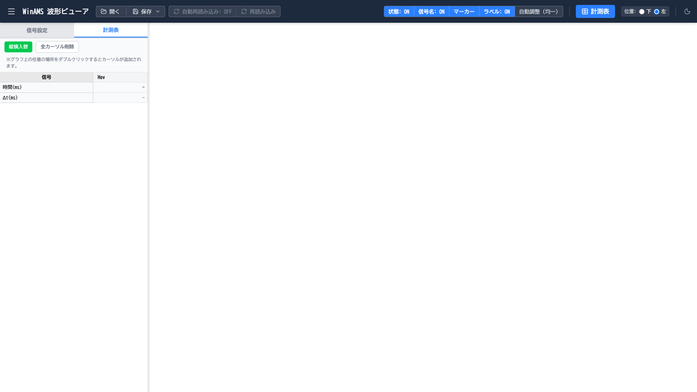
ここにファイルをドロップします。
ドロップしたファイルの扱い
#COMMENT 行あり .csv 波形として読み込みます。
.yaml .yml #COMMENT 行なし .csv 信号定義として、波形の後に適用します。
.wcp プロジェクトとして、波形・設定・表示状態をまとめて復元します。
ライブモード（sim gui）
sim gui から開くと、シミュレータの変数をリアルタイムに流しながら、値を書き込んで動きを確かめられます。sim_gui.html を直接開いたときは、これまでどおり CSV を読むビューアとして動きます。
起動する
sim gui を実行するとブラウザが開く
選ぶ
対象関数と仕向を選ぶ
動かす
「実行」で周期ごとに関数を呼ぶ
入れる
入力パネルで値を書き込む
確かめる
一時停止して拡大・計測、CSV に保存
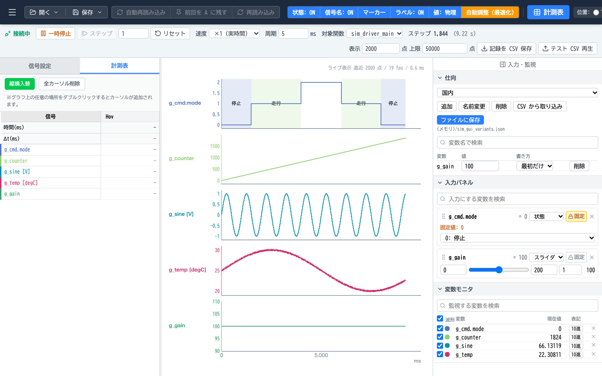
実行中は、変数モニタで「波形」に印を付けた変数が右から流れます。上の接続バーで実行・一時停止・ステップ実行・リセット、速度と周期を変えられます。
基本の操作
- 右の変数モニタで、見たい変数を検索して追加します。「波形」の印を付けた変数が波形に出ます。
- 上の 実行 を押します。波形が流れ始めます。
- 右の入力パネルで変数を追加し、数値・スライダ・トグル・ボタン・状態（一覧から選ぶ）のどれかで値を書き込みます。固定を ON にすると毎周期その値を書き続けます。
- 一時停止 を押すと、残した記録の全体を、ふだんのビューアと同じようにズーム・カーソル計測できます。
- 記録を CSV 保存 で、開始からの記録を WinAMS 形式の CSV に保存できます（
sim runで実行し直せます）。
知っておくこと
- 書いた値は、止まっているときも含めて次の周期の初めに反映されます。それまでは「反映待ち: 値」と表示します。
- LSB・オフセットを設定した変数は、入力も表示も物理値で行えます（書き込むのは生の値）。
- 入力パネルと監視一覧は、仕向を選んでいるときは仕向ファイルに、「選択なし」のときはブラウザに保存します。表示点数と記録の上限はブラウザに保存します。
- テスト CSV 再生 で、WinAMS のテスト CSV の入力を周期ごとに流せます。
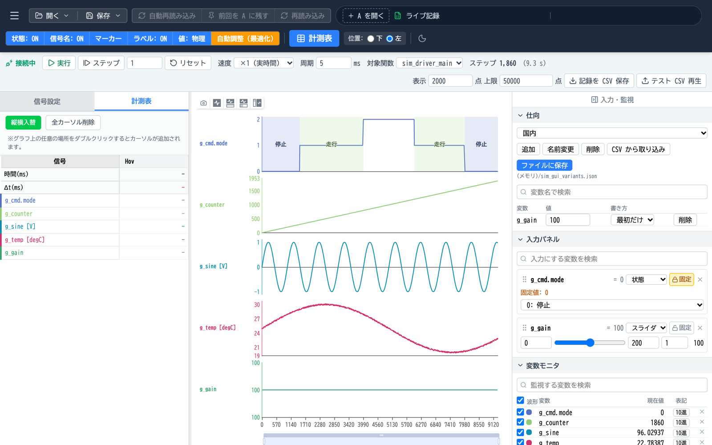
一時停止すると、記録の全体が状態名や単位つきで表示されます。カーソル計測や画像コピーは、この状態で行います。
仕向（初期値と入力・監視の構成）
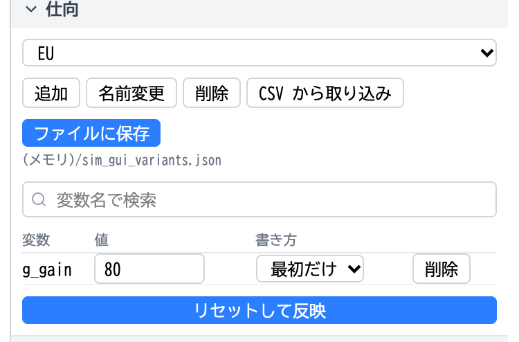
テスト CSV の #InitWheneverCall などで書いている初期化の値を、仕向（出荷先）ごとに登録しておき、ライブモードでも入れられます。
- 右の仕向で 追加 を押して名前を付けるか、CSV から取り込み でテスト CSV の
#Init...の行から作ります。 - 「変数名で検索」から変数を足し、値と書き方（最初だけ／毎回）を決めます。
- 使う仕向を選び、リセットして反映 を押します。
- 仕向を選ぶと、その仕向の入力パネルと監視一覧に切り替わります。初めて選ぶ仕向は今の構成を引き継ぎ、「選択なし」に戻すとブラウザに保存した構成に戻ります。
- 仕向を選んだ状態で入力パネルや監視一覧を変えると、連続操作をまとめて約 0.5 秒後に仕向ファイルへ自動保存します。未保存の初期値の変更も一緒に保存されます。初期値だけを変えたときは ファイルに保存 を押します。
- 同名の仕向に CSV を取り込んでも、入力パネルと監視一覧は引き継ぎます。仕向ファイルの読み込みに失敗した場合は、自動保存を止めます。
- 古い
sim_gui.htmlで同じ仕向ファイルを保存すると、仕向ごとの入力パネルと監視一覧（inputs・watch）が消えます。
sim.cfg と同じフォルダの sim_gui_variants.json に保存され、次に起動したときも使われます。信号情報ファイルと仕向ごとの設定
信号の LSB・単位・状態名と、グループ・高さ・色などの表示の設定を、1 つのファイルにまとめて保存します。sim gui では起動したときに自動で読み込み、変えると自動で保存するので、毎回 YAML を読み込ませる必要はありません。
sim gui を実行- 保存先は
sim.cfgと同じフォルダのsim_gui_signals.yamlです。sim.cfgにgui_signals = パスと書くと変えられます（相対パスはsim.cfgのフォルダから）。 - 仕向（出荷先）で値が違う信号だけ、その仕向での値を同じファイルに書けます。違わない信号は 1 回書くだけです。
初めて使うとき（今の YAML を移す）
sim guiを起動します。- 今まで使っていた YAML を、開く で選ぶか、画面にドロップして 1 回読み込みます。
- 1 秒ほどで、新しい形の
sim_gui_signals.yamlが保存されます。次からは起動するだけで読み込まれます。
仕向ごとに信号の設定を変える
- 右側の仕向パネルで、設定したい仕向（例: EU）を選びます。ビューアだけで開いたときは、ツールバーの「仕向」で選びます。
- 左の信号設定で、変えたい信号の歯車を押します。
- いちばん上の 仕向「EU」だけの設定にする をオンにします。
- 状態名・LSB・オフセット・単位・除外値を変えます。EU の値が共通の値と違う項目には「•」が付きます。
- オフにすると、EU の値が消えて共通の値に戻ります。
- このチェックがオフの信号を変えると、共通の値（どの仕向でも使う値）が変わります。
- 仕向はいくつでも作れます。仕向ごとに 1〜4 を繰り返します。同時に選べる仕向は 1 つです。
- 仕向で変えられるのは状態名・LSB・オフセット・単位・除外値だけです。グループ・高さ・色などの表示はどの仕向でも同じです。

チェックをオンにした信号は、「上書き: states」のように EU で違う項目が出ます。
動画で見る: 仕向だけの状態名を足す
チェックを外すと EU だけの「回生」が消えて共通の状態名に戻り、付け直して状態 2 に「回生」を足すと、波形にも「回生」が出ます。
動画で見る: 仕向を切り替える
右の仕向を「国内」と「EU」で切り替えると、EU にだけある状態名「回生」が出たり消えたりします。波形・計測表・入力パネルのすべてに効きます。
ビューアだけで開いたとき
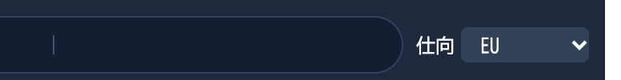
ツールバーの右端に「仕向」が出ます。
sim_gui.htmlを直接開いたときは、ファイルの代わりにブラウザに信号情報を覚えます。次に同じブラウザで開くと、最後の設定で始まります。- 信号情報に仕向の名前があると、ツールバーに「仕向」の選択欄が出ます。「（共通）」か各仕向を選べ、選んだものも覚えます。
- ブラウザや開く場所が変わると、別の保存場所になります。
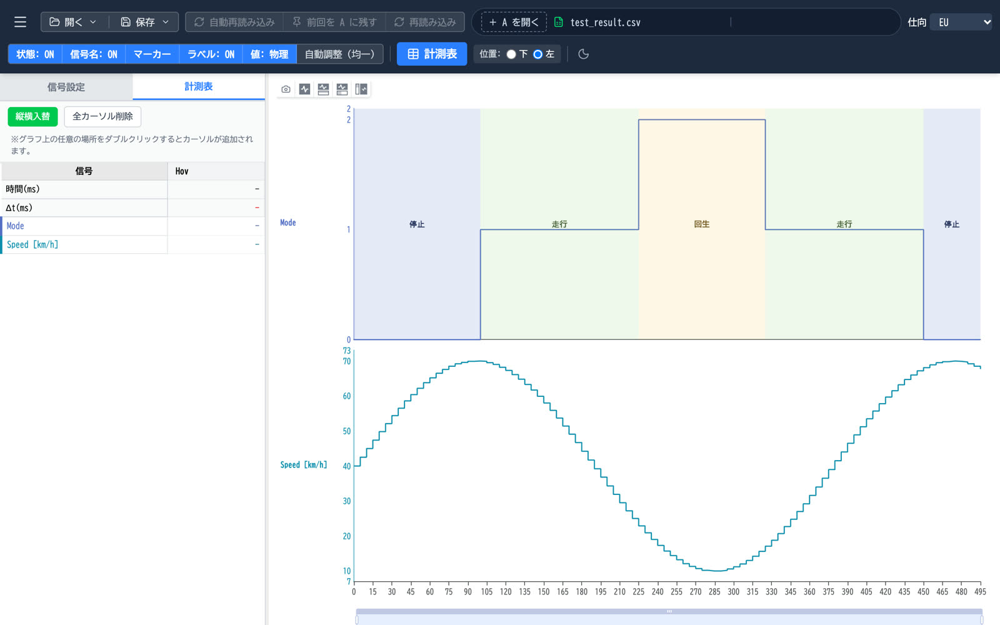
細かい動作
読めないとき
起動時に信号情報ファイルが読めない（壊れているなど）と、上のバーに理由とパスを出し、自動保存を止めます（壊れたファイルを上書きしないため）。直してから起動し直してください。
ほかの CSV の信号も残る
ファイルは全部のテストで共有します。今開いている CSV にない信号やグループの設定も、消さずに残します。
古い形の YAML
信号名がいちばん上に並ぶ古い形も、CSV の対応表も読めます。保存は新しい形になります。読めない YAML は「YAML を読めません」と出して何も変えません。
ファイル名つきの信号名
前の版が保存した Sample/EngineSpeed は、読み込むときに EngineSpeed にそろえ、次の保存でファイルからも消えます。両方あるときは EngineSpeed の設定を使います。a.c/s_cnt と b.c/s_cnt のように、ファイルだけが違う同名の信号が 2 つ以上あるときは、区別のためすべてそのまま残します。ライブで監視している engine.c/s_cnt も、CSV の列と同じく s_cnt の設定を使います（sim とのやり取りには完全な名前を使います）。
ツールバー
画面上部のボタンで、ファイル操作と表示の切り替えを行います。
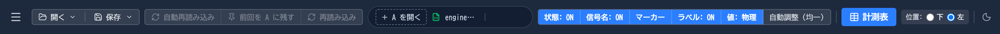
サイドバーの表示 / 非表示。波形を広く見たいときに畳みます。
ファイルを開く（複数選択可）／.wcp か .yaml として保存。
波形 CSV の変更を約 1.5 秒ごとに確認し、変わったら読み直します。
波形 CSV を今すぐ読み直します。表示状態は保ちます。
読み込み中の CSV 名と、マウスを合わせている信号名。
状態名の表示。背景色のみ、または背景色＋文字。
波形左の信号名ラベル。「別名」で設定した表示名を使います。
カーソルの縦線と、カーソル間の時間差矢印。下のズームスライダーにもカーソルの位置を実線で出します（マウスの位置は点線）。
カーソル位置の値ラベル。OFF でも交点のドットは残ります。
グラフと計測表の値を、物理値と CSV の生値で切り替えます。状態名の表示は変わりません。
レーン高さの決め方。最適化は値の種類や振れ幅から配分。高さを手で変えると「手動」に。
計測表の表示 / 非表示。
計測表を画面下か、サイドバーの「計測表」タブに置きます。
ライト / ダークテーマの切り替え。
自動再読み込み
シミュレーションを回し直すたびに CSV を開き直す必要はありません。ON にしておけば、CSV の更新に合わせて波形が切り替わります。
使い方
- Chrome または Edge で、波形 CSV を「開く」かドラッグ＆ドロップで読み込む
- ツールバーの 自動再読み込み を押して ON にする（ON のときはボタンが青くなる）
- あとは CSV を書き換えるだけで、表示が追従する
知っておくこと
- タブが裏にある間は確認を止め、戻ると再開します。
- 再読み込みボタンで、いつでも手動で読み直せます。
- 読み取り権限がなくなると自動再読み込みを OFF にし、通知で知らせます。
波形比較
プログラムを変える前の CSV（A）と変えた後の CSV（B）を重ねて、どこで、どう変わったかを確かめます。値の違いと、状態の切り替わりのずれは自動で見つけます。

始めかた
- いつもどおり波形 CSV を開く。これが比べる B になる
- ファイル名の欄の ＋ A を開く をクリックするかそこへドロップ、または画面右半分の「A（比較元）として開く」へドロップして、変更前の CSV を追加する（開く ▼ → 「比較する CSV（A）を開く」でも開けます）
- ツールバーに A → B の順でファイル名が並び、比較が ON になる
比較 で重ね表示を切り替え（ON のときはボタンが青くなる）、A のファイル名の横の ✕ で比較を終えます。A と B の間の ⇆ で A と B を入れ替えます。波形 CSV を 2 つまとめてドロップすると、更新日時の古い方が A になります。
A が B より長く記録されている場合、B の既存の時間軸の末尾に A の残りの時刻を追加し、A の終わりまで表示・計測できます。延長部分の B は「値なし」となり、差分には数えません。
波形の見かた
アナログ信号 B は実線、A は同じ色の薄い破線。右端に「A」「B」の札を出して見分けやすくしています。値が違う区間は 2 本の線の間を赤く塗り、レーンの下に Δ（B − A）の小さな波形を出します。
状態信号 上の段が A、下の段が B。食い違う区間は 2 段まとめて淡い赤の枠と斜線で囲みます。
タイミングのずれ 切り替わりの位置から寸法線を引き、「50 ms 遅れ」「30 ms 早い」と B が A より遅いか早いかを書きます。
マウス位置 アナログ信号で A と B が違うときだけ、レーンの下の Δ の波形と Hov の縦線が交わる点に小さな丸を付け、横に Δ +151.98 rpm のような札を出します。札は波形の点に沿って上下し、行の端では時間軸の目盛りや次のレーンに重ならない位置に寄せます。
差分を順に見る
◀ ▶ 前後の差分へ移動。差分が中央に来るように拡大し、点線の枠で示します。「差分 3 / 6」は位置と件数。
全体 全体表示に戻します。
差分: すべて / 値の違いだけ 移動対象と波形上に表示する差分の種類を絞ります。
差分のある信号だけ 差分のない信号を隠します。
下のズームバーの水色の部分には、差分のある区間を帯で出します（値の違い = 赤、タイミングのずれ = 琥珀色）。ズームしても帯の位置は変わりません。
結果を読む
サイドバーの印 ≠n 値の違いの数、⏱n タイミングのずれの数、= 差分なし。片方にしかない信号は「A のみ」「B のみ」。
比較の結果 サイドバーの下に、値の違いの区間数と合計時間、タイミングのずれの数、判定の条件を出します。
計測表 信号ごとに A / B を並べ、アナログ信号には Δ も出します。信号名は A / B / Δ に共通の見出しにまとめます。A と B が違う値は赤の太字。
カーソルのラベル 同じ値なら値だけ。違うときは「A …」（赤）と「B …」を、アナログ信号はそれぞれの線上の点の横に、状態信号はそれぞれの段に出します。
保存と繰り返しの比較
- .wcp に保存すると A の CSV も入り、開き直すと比較の状態まで戻ります。A のない以前の .wcp もそのまま開けます。
- 自動再読み込みと再読み込みは B だけを読み直します。A はそのまま残り、差分は自動で計算し直されます。
- 前回を A に残す を ON にすると、テストを流し直して CSV が先頭から書き直されたとき、前回の結果を A にして自動で比べます。続きが書き足されている間は B だけを更新します。
- B を A にする で、今の B を次の比較の A にできます。変更を繰り返すときに使います。
判定の条件
- 物理値に変換する前の生値で比べ、許容誤差は 0 です。
- A か B のどちらかが無効区間にある時刻は比べません。
- タイミングのずれは状態信号だけが対象です。変わり方が同じ切り替わりを、500 ms 以内の幅で組にします。組にならない区間は「値の違い」として数えます。
動作確認用の A / B の CSV と信号定義 YAML を docs/samples/compare/ に置いています。どの差分がどこに出るはずかも書いてあります。
物理値変換と Y 軸省略
CSV の生値は、信号ごとの LSB とオフセットで物理値に直して表示します。2^-8 や 1/256 のような式も書けます。ツールバーの 値: 生値 に切り替えると、全信号を変換前の生値で表示します。
無効値（除外値）
センサー未接続を表す 65535 のような値は「除外値」として、Y 軸の範囲計算から外します。YAML の undefined で指定するほか、最大値が 255・32767・65535 などの典型的な値で、他の値から大きく離れていれば自動で判定します。除外値は生値で判定します。
Y 軸省略が有効なら、通常の値と除外値の間の空白を詰めて表示するので、通常の値の変化がつぶれません。
一覧編集
サイドバー上部の「一覧編集」で、全信号の設定を 1 つの表で編集できます。信号が多いときの設定作業がまとめて片づきます。
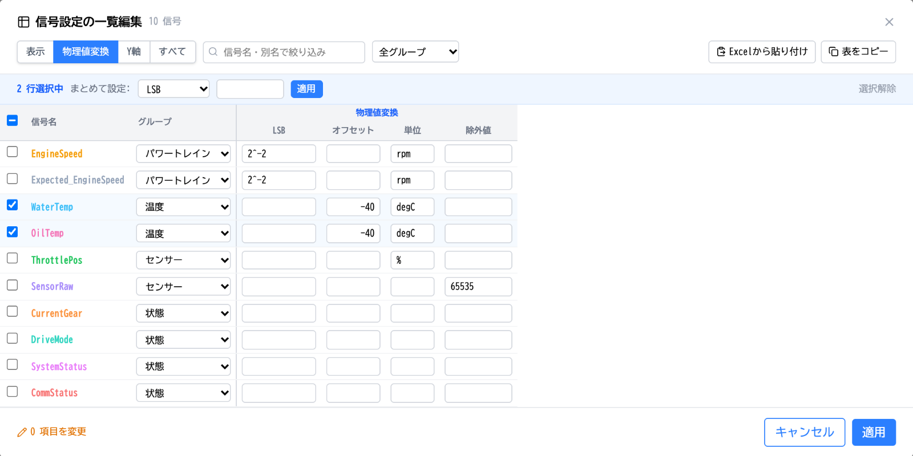
2 行を選択したところ。上部の「まとめて設定」で、選択行に同じ値を入れられます。
タブで列を切り替え
「表示」「物理値変換」「Y 軸」「すべて」。
絞り込み
信号名・別名の文字や、グループで行を絞ります。
状態名
セルを押して編集。他の信号の定義をコピーできます。
まとめて設定
行を選び、項目と値を指定して一括入力。
Excel と往復
行は「信号名」列で対応づけます。
適用まで下書き
変更数と入力エラーを表示。エラーがあると適用できません。
カーソルと計測表
波形上をダブルクリックするとカーソル（C1, C2, …）が置かれ、計測表に各時点の値が並びます。
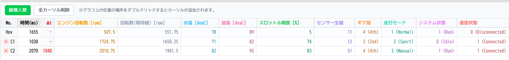
Hov はマウス位置の値、Δt は前のカーソルからの時間差。状態名がある信号は「2 (2nd)」、無効区間にある値は「— (IG OFF)」のように表示します。
波形をダブルクリック カーソルを追加
行の ✕ そのカーソルを削除
全カーソル削除 すべてのカーソルを削除
縦横入替 信号を列にするか行にするかを切り替え
画像コピーと保存
チャート左上のアイコンで画像をクリップボードへ。作業の状態はファイルに保存して、次回そのまま再開できます。
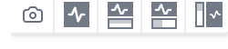
カメラの右の 4 つのボタンが、下の 4 つのレイアウトに対応します。保存メニュー
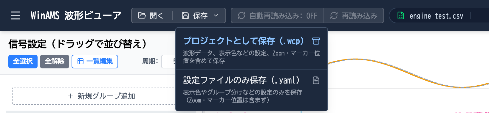
Chrome / Edge では保存先を選べます（読み込んだ設定 YAML や .wcp のフォルダ、どちらもなければ波形 CSV のフォルダから始まります）。それ以外ではダウンロードになります。
保存される内容
| 内容 | .WCP | .YAML |
|---|---|---|
| 波形データ（CSV） | ✓ | — |
| グループ・色・別名・線 | ✓ | ✓ |
| LSB・オフセット・単位・除外値 | ✓ | ✓ |
| 状態名・Y 軸の固定範囲 | ✓ | ✓ |
| 無効区間のルール | ✓ | ✓ |
| ズーム・カーソル | ✓ | — |
| 表示の切り替え・計測表の配置・テーマ | ✓ | — |
| 比較する CSV（A）と比較の状態 | ✓ | — |
ダークテーマ
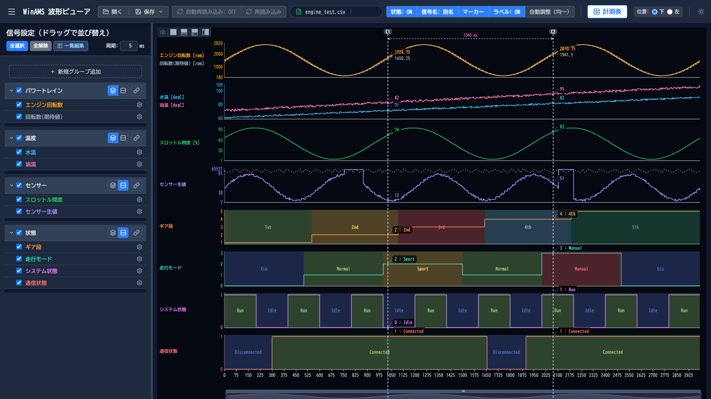
ファイル形式
読み込める 4 種類のファイルと、その書き方です。信号情報 YAML は、ライブモードでは sim_gui_signals.yaml として自動で読み書きします（信号情報と仕向）。
波形 CSV
#COMMENT 行が見出し。以降の 1 行が 1 ステップ。
信号情報 YAML
信号の値（変換・単位・状態名と仕向ごとの違い）と表示の設定。
信号定義 CSV
「信号名, キー, 値」の 3 列。
プロジェクト
波形と設定（表示状態入り）の ZIP。
version: 2 variants: [国内, EU] # 選べる仕向の名前 signals: # 信号の値 EngineSpeed: # 波形 CSV の信号名 lsb: 2^-2 # 物理値 = 生値 × lsb + offset（式も可） offset: 0 unit: rpm undefined: [65535] # 生値の除外値 CurrentGear: states: {0: 停止, 1: 走行} # 共通の状態名 variants: EU: # EU だけ違う部分 states: {2: 回生, 1: null} # 2 を足し、1 の名前を消す unit: "-" # 項目ごと置き換え inactive: # 無効区間（生値で判定） - signal: PIG when: 0 # 値、または { min, max } の範囲のリスト label: IG OFF view: # 表示の設定（仕向に関係なく共通） layoutMode: optimized # uniform（省略時）/ optimized / manual groups: パワートレイン: {expanded: true, visible: true, layout: overlap, syncRange: true} signals: # この順番で並べる EngineSpeed: group: パワートレイン alias: エンジン回転数 # 別名 color: "#f59e0b" lineWidth: 2 # 既定 1.5 lineType: solid # solid / dashed / dotted weight: 2 # レーン高さの比率（既定 1） yMin: 0 # Y 軸を固定する場合 yMax: 8000 checked: true # 表示する CurrentGear: {group: 状態, alias: ギア段}
; ";" で始まる行は読み飛ばす #COMMENT,Sample/EngineSpeed,Sample/WaterTemp,Sample/CurrentGear 0,6000,100,1 1,6150,101,1 2,6290,101,1
EngineSpeed,lsb,2^-2 EngineSpeed,unit,rpm WaterTemp,offset,-40 SensorRaw,undefined,"255,65535" CurrentGear,1,1st CurrentGear,2,2nd
波形 CSV
1 列目が #COMMENT の行を見出しに。a/b/Signal は最後の / 以降を信号名に（ほかの列と重なるときは、区別できるところまでパスを残す）。時刻はステップ × 周期（ms）。WinAMS の結果 CSV は 実測?(期待) の実測値を読み、mod ブロックが複数あるときは先頭だけを表示します。
信号情報 YAML
項目はすべて省略可。仕向で違う信号だけ variants に違う部分を書きます。信号名がいちばん上に並ぶ古い形も読めます（保存は新しい形）。名前に exp か 期待値 を含む信号は、線種の指定がなければ破線で描きます。
信号定義 CSV
キーは lsb・offset・unit・undefined、または状態名を割り当てる数値。
ビルドと配布
vite-plugin-singlefile で JS と CSS を 1 つの HTML に埋め込みます。できたファイルはネットワークなしで開けます。
# 依存関係のインストール（初回のみ） $ npm install # ビルド（postbuild で dist/sim_gui.html に改名される） $ npm run build # 開発サーバー（http://localhost:3000） $ npm run dev
- できるのは
dist/sim_gui.html1 つです。コミットしておき、simのビルドが実行ファイルの隣に置きます（simを使う PC に Node は要りません）。 - Chrome / Edge の最新版を推奨します。自動再読み込みと保存先の選択は Chrome / Edge で使えます。